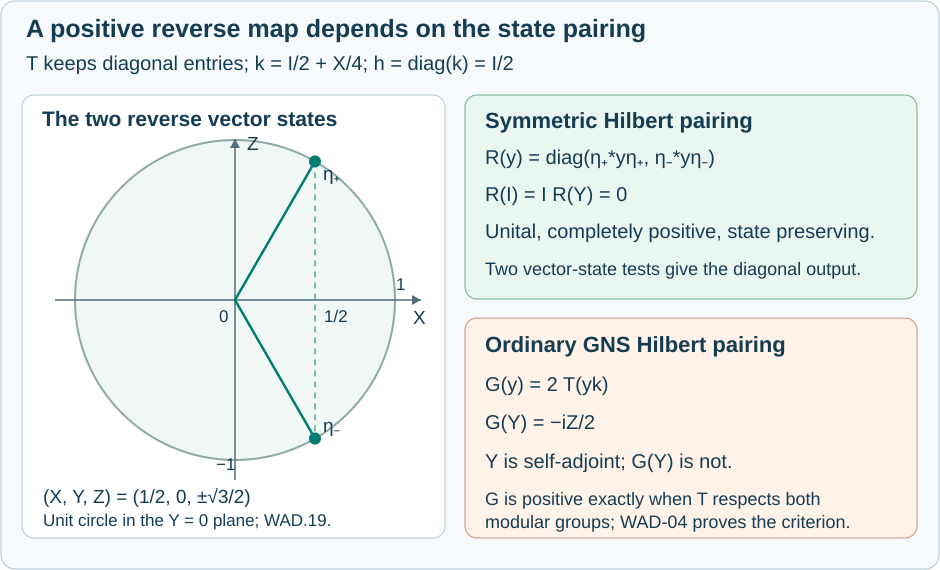

State-weighted adjoints and modular compatibility
A completely positive map carries observables forward. Reversing its Hilbert-space pairing depends on how the state enters the inner product. Symmetric placement of the density gives a completely positive reverse map. The ordinary GNS inner product need not do so: its adjoint is positive exactly when the forward map respects the two modular groups.
We prove this equivalence for all finite matrix sizes, compute a two-level example, and retain the full finite-tracial-algebra theorem used in matrix approximation. A final normalization check corrects a missing matrix-size factor in the printed proof of Takesaki III, Lemma XVI.1.11.
Densities, pairings and completely positive maps
Write \(M_m=M_m(\mathbb C)\), with \(m\ge1\), and use the ordinary trace \(\operatorname{Tr}_m\). A state with density \(h\) is
\[ \varphi_h(x)=\operatorname{Tr}_m(hx),\qquad h\ge0,\quad\operatorname{Tr}_m(h)=1. \tag{WAD.1} \]It is faithful exactly when \(h>0\). Until WAD-06, both densities below are invertible. Inner products are linear in the second variable.
We use the complete finite diagonalization and trace-duality proof in P03 of the earlier tracial-adjoint lesson. In particular, positive matrices have orthonormal eigenbases; a faithful density has positive eigenvalues and hence all its real and imaginary powers. The pairing \(\operatorname{Tr}(ab)\) is nondegenerate, since pairing with each matrix unit recovers every entry. A matrix is positive if and only if its trace pairing with every positive matrix is real and nonnegative: rank-one tests give its quadratic form, and polarization gives self-adjointness.
The two Hilbert inner products we compare are
\[ \langle x,z\rangle_{h,\mathrm G} =\operatorname{Tr}_m(hx^*z),\qquad \langle x,z\rangle_{h,\mathrm S} =\operatorname{Tr}_m(h^{1/2}x^*h^{1/2}z). \tag{WAD.2} \]They are respectively the ordinary Hilbert–Schmidt inner products of \(xh^{1/2},zh^{1/2}\) and of \(h^{1/4}xh^{1/4},h^{1/4}zh^{1/4}\). Both changes of variables are invertible, so both forms are positive definite.
Let \(T:M_m\to M_n\) be unital and completely positive, abbreviated ucp. Its ordinary trace adjoint \(T_*:M_n\to M_m\) is specified by
\[ \operatorname{Tr}_n(T(x)y) =\operatorname{Tr}_m(xT_*(y)). \tag{WAD.3} \]There is no normalization factor in (WAD.3).
Here are the finite-dimensional positivity details. The block matrix \([e_{ij}]_{i,j=1}^m\) is positive: its quadratic form on \((z_1,\ldots,z_m)\) is \(\left|\sum_j(z_j)_j\right|^2\). Thus the Choi block \(C=[T(e_{ij})]\) is positive. Diagonalizing this finite matrix writes \(C=\sum_\alpha v_\alpha v_\alpha^*\), with block coordinates \(v_{\alpha i}\in\mathbb C^n\). Let \(V_\alpha:\mathbb C^n\to\mathbb C^m\) have \(i\)-th row \(v_{\alpha i}^*\). Matrix-unit multiplication then gives
\[ T(x)=\sum_\alpha V_\alpha^*xV_\alpha,\qquad T_*(y)=\sum_\alpha V_\alpha yV_\alpha^*, \qquad \sum_\alpha V_\alpha^*V_\alpha=1_n. \tag{WAD.4} \]The second formula follows by cyclicity of ordinary trace, including rectangular products. Each sandwich is completely positive: every amplification is the corresponding block-diagonal sandwich of a positive block. Consequently \(T_*\) is completely positive and preserves adjoints. This also proves the needed finite Kraus representation rather than assuming it.
Fix \(k>0\) in \(M_n\), of ordinary trace one, and assume
\[ h=T_*(k)>0. \tag{WAD.5} \]Then \(\operatorname{Tr}_m(h)=1\), since \(T(1_m)=1_n\), and \(\varphi_h=\varphi_kT\). The faithfulness assumption on \(h\) is equivalent to \(T\) being faithful on positive elements. Indeed, for \(x\ge0\), faithfulness of \(\varphi_k\) makes \(\varphi_h(x)=0\) equivalent to \(T(x)=0\).
The symmetric reverse map
Define
\[ R(y)=h^{-1/2}\, T_*(k^{1/2}yk^{1/2})\,h^{-1/2}. \tag{WAD.6} \]This map is ucp. Every factor in its definition is completely positive, and (WAD.5) gives \(R(1_n)=1_m\). It also preserves the states in the reverse direction:
\[ \varphi_h(R(y)) =\operatorname{Tr}_m T_*(k^{1/2}yk^{1/2}) =\operatorname{Tr}_n(ky) =\varphi_k(y). \tag{WAD.7} \]For the middle equality, apply (WAD.3) at \(x=1_m\).
The map \(R\) is exactly the Hilbert adjoint of \(T\) for the symmetric pairings:
\[ \langle T(x),y\rangle_{k,\mathrm S} =\langle x,R(y)\rangle_{h,\mathrm S}. \tag{WAD.8} \]To verify it, move the outer \(k^{1/2}\) through the trace on the left and apply (WAD.3) to \(x^*\). This gives \(\operatorname{Tr}_m(x^*T_*(k^{1/2}yk^{1/2}))\), which is the right side after substituting (WAD.6) and cycling \(h^{1/2}\). Nondegeneracy of the inner product proves uniqueness. No assertion that \(RT\) is the identity follows from (WAD.7) or (WAD.8).
The GNS adjoint has a different formula
For the GNS pairings in (WAD.2), the Hilbert adjoint is
\[ G(y)=T_*(yk)\,h^{-1}. \tag{WAD.9} \]Indeed,
\[ \begin{aligned} \langle T(x),y\rangle_{k,\mathrm G} &=\operatorname{Tr}_n(T(x)^*yk)\\ &=\operatorname{Tr}_m(x^*T_*(yk)) =\langle x,G(y)\rangle_{h,\mathrm G}. \end{aligned} \tag{WAD.10} \]The multiplication order in (WAD.9) matters. It gives \(G(1_n)=1_m\) and \(\varphi_hG=\varphi_k\), but it does not by itself give positivity.
For completeness, \(T\) is a contraction for these GNS norms. Applying the size-two amplification of a ucp map to
\[ \begin{pmatrix}x^*x&x^*\\x&1\end{pmatrix}\ge0 \]and sandwiching by the column \((1,-T(x))^{\mathsf T}\) proves \(T(x)^*T(x)\le T(x^*x)\). Apply \(\varphi_k\) and use \(\varphi_kT=\varphi_h\). Thus the Hilbert adjoint \(G\) is a Hilbert-space contraction, even in examples where it fails to preserve self-adjoint elements. Hilbert-space contraction and positivity as a map of algebras are different properties.
Positivity is equivalent to modular compatibility
The matrix modular groups are
\[ \sigma_t^h(x)=h^{it}xh^{-it},\qquad \sigma_t^k(y)=k^{it}yk^{-it}\quad(t\in\mathbb R). \tag{WAD.11} \]Here is their modular interpretation in every finite size. Identify the GNS Hilbert space with Hilbert–Schmidt matrices by \(x\mapsto xh^{1/2}\). Its involution is \(S(\xi)=h^{-1/2}\xi^*h^{1/2}\). Let \(J(\xi)=\xi^*\) and \(D(\xi)=h^{1/2}\xi h^{-1/2}\). The map \(J\) is antiunitary. In an eigenbasis of \(h\), the matrix units are an orthonormal eigenbasis for \(D\), with strictly positive eigenvalues \((h_i/h_j)^{1/2}\), so \(D\) is positive. The identity \(S=JD\) is therefore its polar decomposition. Its modular operator is \(\Delta=D^2\), and conjugation by \(\Delta^{it}\) on left multiplication gives exactly \(\sigma_t^h\) in (WAD.11). All domains are the whole finite-dimensional space. The same argument applies to \(k\); Three questions in a matrix algebra gives the concrete two-level example.
Theorem. Under (WAD.5), the following statements are equivalent:
- \(G\) is positive.
- \(G\) preserves adjoints.
- \(T\sigma_t^h=\sigma_t^kT\) for every real \(t\).
- \(G=R\).
When they hold, \(G\) is ucp.
Proof. A positive map preserves adjoints. A self-adjoint matrix is a difference of positive matrices, so its image is self-adjoint; splitting a general matrix into real and imaginary parts proves the assertion. This gives 1 implies 2.
Suppose 2 holds. Since \(T_*\) preserves adjoints, comparing \(G(y^*)\) with \(G(y)^*\), and then writing \(x=y^*\), gives
\[ T_*(xk)h^{-1}=h^{-1}T_*(kx). \]Multiplication by \(h\), followed by substitution \(z=xk\), yields
\[ T_*(kzk^{-1})=hT_*(z)h^{-1}. \tag{WAD.12} \]Choose orthonormal eigenbases for \(k\) and \(h\). Conjugation by either density acts diagonally on the associated matrix units, with positive eigenvalues given by ratios of density eigenvalues. Equation (WAD.12) says that a nonzero coefficient of \(T_*\) can connect only equal ratios. The same coefficients therefore intertwine every imaginary power of these ratios:
\[ T_*\sigma_t^k=\sigma_t^hT_*. \tag{WAD.13} \]This is a finite coefficient argument and requires no analytic continuation theorem. Applying the nondegenerate trace pairing to (WAD.13), and cycling the two powers through it, gives 3.
Conversely, 3 and trace duality give (WAD.13). In density eigenbases, a coefficient connecting ratios \(a,b>0\) must satisfy \(c(a^{it}-b^{it})=0\) for all real \(t\). Differentiating the scalar exponentials at zero gives \(c(\log a-\log b)=0\), so nonzero coefficients again connect equal ratios. They consequently intertwine the square roots of those ratios:
\[ T_*(k^{1/2}zk^{-1/2}) =h^{1/2}T_*(z)h^{-1/2}. \tag{WAD.14} \]Put \(z=yk\) in (WAD.14), and substitute in (WAD.6). The result is \(R(y)=T_*(yk)h^{-1}=G(y)\), proving 4. Finally 4 implies 1 because WAD-02 proves that \(R\) is completely positive. This also proves the last assertion. \(\square\)
If both states are normalized traces, both modular groups are trivial and \(G=R\). For arbitrary faithful states, even a ucp map preserving the states can fail condition 3; preservation of averages alone does not preserve modular time.
A two-level counterexample with exact reverse states
Let
\[ X=\begin{pmatrix}0&1\\1&0\end{pmatrix},\quad Y=\begin{pmatrix}0&-i\\i&0\end{pmatrix},\quad Z=\begin{pmatrix}1&0\\0&-1\end{pmatrix}. \]Take the dephasing map and densities
\[ T(y)=\operatorname{diag}(y_{11},y_{22}),\qquad k=\tfrac12 I+\tfrac14 X,\qquad h=\tfrac12 I. \tag{WAD.15} \]The map is the sum of the two sandwiches by the diagonal rank-one projections, so it is ucp and \(T_*=T\). The eigenvalues of \(k\) are \(3/4,1/4\); those of \(h\) are \(1/2,1/2\). Both states are faithful and \(T_*(k)=h\).
Formula (WAD.9) gives
\[ G(Y)=2T(Yk)=-\tfrac{i}{2}Z. \tag{WAD.16} \]Its input is self-adjoint and its output is a nonzero skew-adjoint matrix. Thus \(G\) is not positive. More explicitly \(I+Y\ge0\), with eigenvalues zero and two, whereas \(G(I+Y)=I-\tfrac{i}{2}Z\) is not self-adjoint.
Here the modular obstruction is visible without using the theorem. Since \(h\) is scalar, its modular group is trivial. But \(T(Z)=Z\) does not commute with \(k\), because \([k,Z]=-\tfrac{i}{2}Y\ne0\). In an eigenbasis of \(k\), the logarithm has the same eigenspaces and distinct eigenvalues; hence \(Z\) also fails to commute with \(\log k\). Differentiation at zero shows that \(\sigma_t^k(Z)\) is not constant. Condition 3 therefore fails.
The symmetric reverse map has a direct geometric description. Put
\[ a=\frac{\sqrt3+1}{4},\qquad b=\frac{\sqrt3-1}{4},\qquad k^{1/2}=aI+bX. \tag{WAD.17} \]Squaring verifies (WAD.17), since \(a^2+b^2=1/2\) and \(2ab=1/4\). The positive eigenvalues \(a+b=\sqrt3/2\) and \(a-b=1/2\) select the positive square root. Define unit vectors
\[ \eta_+=\sqrt2\begin{pmatrix}a\\b\end{pmatrix}, \qquad \eta_-=\sqrt2\begin{pmatrix}b\\a\end{pmatrix}. \]Then
\[ \begin{gathered} R(y)= \begin{pmatrix}\eta_+^*y\eta_+&0\\0&\eta_-^*y\eta_-\end{pmatrix},\\ R(I)=I,\qquad R(X)=\tfrac12I,\\ R(Y)=0,\qquad R(Z)=\tfrac{\sqrt3}{2}Z. \end{gathered} \tag{WAD.18} \]To check the first formula, use \(R(y)=2T(k^{1/2}yk^{1/2})\) and its two diagonal entries. The four basis values follow by matrix multiplication. They also verify state preservation: both \(\varphi_hR\) and \(\varphi_k\) take values \(1,1/2,0,0\) on \(I,X,Y,Z\).
For a unit vector \(\eta\), its three real coordinates \((\eta^*X\eta,\eta^*Y\eta,\eta^*Z\eta)\) describe its rank-one density. The two reverse states here have coordinates
\[ (1/2,0,\sqrt3/2),\qquad(1/2,0,-\sqrt3/2). \tag{WAD.19} \]They lie on the unit circle in the \(X,Z\)-plane. The figure shows these exact coordinates, not a numerical fit.

The state vectors in (WAD.19) define the two diagonal outputs of \(R\). Equation (WAD.16) explains why the other adjoint is not positive. The native SVG retains the exact construction and labels.
A singular density requires its support corner
Retain \(k>0\), but allow \(h=T_*(k)\) to have a kernel. Let \(p\) be its support projection. Since \(\varphi_k(T(1-p))=\operatorname{Tr}_m(h(1-p))=0\), faithfulness of \(k\) and positivity give \(T(1-p)=0\). From (WAD.4),
\[ 0=\sum_\alpha V_\alpha^*(1-p)V_\alpha. \]Its quadratic form is a sum of squared norms, so \((1-p)V_\alpha=0\) for every \(\alpha\). Consequently
\[ T(x)=T(pxp),\qquad T_*(y)=pT_*(y)p. \tag{WAD.20} \]The restriction \(T:pM_mp\to M_n\) is unital, where the source unit is \(p\), and its pulled-back state is faithful. The density \(h_p\) is invertible on \(p\mathbb C^m\). Thus
\[ R_p(y)=h_p^{-1/2}T_*(k^{1/2}yk^{1/2})h_p^{-1/2} \tag{WAD.21} \]is a ucp map to the corner, with \(R_p(1_n)=p\), and preserves the states.
The formula with inverses interpreted on the support gives this corner map. Its zero extension into \(M_m\) has value \(p\) at the identity and is not unital when \(p\ne1_m\). For any state \(\omega\) on \(M_n\), a full unital extension is
\[ \widetilde R_\omega(y)=R_p(y)+\omega(y)(1_m-p). \tag{WAD.22} \]The two summands have orthogonal range corners and are completely positive. For the second, positivity of every scalar block \([\omega(y_{ij})]\) follows by testing scalar columns against the positive block \([y_{ij}]\); tensoring that scalar positive matrix with the projection \(1-p\) preserves positivity. Formula (WAD.22) is unital and preserves the same state because \(h(1-p)=0\).
These extensions need not be unique. For \(T:M_2\to M_2\) defined by \(T(x)=x_{11}I\), take \(k=I/2\). Then \(h=p=e_{11}\) and \(R_p(y)=\operatorname{Tr}_2(ky)e_{11}\). Distinct choices of \(\omega\) give distinct values in the \(e_{22}\) corner. The faithful theorem cannot be transferred to the full algebra by ignoring the kernel.
The finite-tracial-algebra theorem in full generality
Let \(M\) be any von Neumann algebra with a faithful normal tracial state \(\tau\). There is no factor or separability assumption. Let \(T:M_m\to M\) be ucp and faithful on positive elements. In this section use the normalized matrix trace
\[ \tau_m=\operatorname{Tr}_m/m,\qquad \varphi=\tau T,\qquad \varphi(x)=\tau_m(Hx). \tag{WAD.23} \]The capital \(H\) distinguishes this density from the ordinary-trace convention in (WAD.1). Matrix units give
\[ H_{ij}=m\,\varphi(e_{ji}),\qquad H>0,\qquad\tau_m(H)=1. \tag{WAD.24} \]Theorem. There is a unique normal ucp map \(S:M\to M_m\) with
\[ \tau_m(H^{1/2}S(y)H^{1/2}x)=\tau(yT(x)) \quad(x\in M_m,\ y\in M). \tag{WAD.25} \]It satisfies \(\varphi S=\tau\) and
\[ \tau(T(x)^*T(x)) \le\tau_m(H^{1/2}x^*H^{1/2}x). \tag{WAD.26} \]Proof. Define the finite matrix map \(A:M\to M_m\) by
\[ A(y)_{ij}=m\,\tau(yT(e_{ji})). \tag{WAD.27} \]Its coordinates are bounded normal functionals: multiplication by a fixed bounded operator is ultraweakly continuous, as proved in The ultraweak convergence needed by finite cutoffs. These finitely many coordinates give a bounded normal map. Expansion in matrix units proves \(\tau_m(A(y)x)=\tau(yT(x))\), including uniqueness.
To prove complete positivity, let \(Y=[y_{ab}]\ge0\) in \(M_r(M)\) and \(X=[x_{ab}]\ge0\) in \(M_r(M_m)\). Pair the amplifications:
\[ (\operatorname{Tr}_r\otimes\tau_m)(A^{(r)}(Y)X) =(\operatorname{Tr}_r\otimes\tau)(Y T^{(r)}(X))\ge0. \tag{WAD.28} \]The equality follows by summing \(\tau_m(A(y_{ab})x_{ba})\). The functional \(\operatorname{Tr}_r\otimes\tau\) is positive and tracial, by its diagonal sum and the trace identity. A trace of the product of two positive elements is nonnegative, since cyclicity turns it into the trace of a positive square-root sandwich. Complete positivity of \(T\) therefore proves the inequality. The finite matrix positive-dual-cone test from WAD-01 now gives \(A^{(r)}(Y)\ge0\). Since \(r\) was arbitrary, \(A\) is cp.
Faithfulness of \(\tau T\) makes \(H\) invertible, and the pairing at \(y=1\) gives \(A(1)=H\). Thus
\[ S(y)=H^{-1/2}A(y)H^{-1/2} \]is normal and ucp. It satisfies (WAD.25). Nondegeneracy of the trace pairing and invertibility of \(H\) prove uniqueness. Setting \(x=1\) gives \(\varphi S=\tau\).
It remains to prove the stronger Hilbert estimate, rather than replacing it by the GNS Schwarz estimate. Equip \(M_m\) with \(\langle a,b\rangle_H=\tau_m(H^{1/2}a^*H^{1/2}b)\). This is positive definite by the fourth-root change of variables in WAD-01. Let \(K=L^2(M,\tau)\), the completion for \(\tau(a^*b)\). The full completion and adjoint details are P05–P06 of the earlier lesson. In particular, \(T:M_m\to K\) is bounded before any contraction conclusion: in a finite orthonormal basis \(b_j\), Cauchy–Schwarz gives \(\|T(\sum_jc_jb_j)\|\le(\sum_j\|T(b_j)\|^2)^{1/2}(\sum_j|c_j|^2)^{1/2}\). Its Hilbert adjoint is defined by the finite coordinate pairings. Equation (WAD.25), applied to \(x^*\), identifies that adjoint on \(M\subset K\) with \(S\).
The map \(TS:M\to M\) is ucp and \(\tau TS=\tau\). The size-two Schwarz proof in WAD-03 therefore gives
\[ \|TS(y)\|_2^2 \le\tau(TS(y^*y))=\|y\|_2^2. \]This extends to a contraction on \(K\), since \(M\) is dense there by the definition of the completion. On this completion it is \(TT^\dagger\), where \(\dagger\) denotes the Hilbert adjoint. The elementary Hilbert norm identity \(\|TT^\dagger\|=\|T\|^2\) follows from \(\|T^\dagger v\|^2=\langle v,TT^\dagger v\rangle\) and \(\|T^\dagger\|=\|T\|\); the latter equality follows by norming vectors with unit-vector pairings. Hence \(\|T\|\le1\), which is (WAD.26). \(\square\)
All normality and positivity assertions concern bounded maps between the stated algebras. No arbitrary Radon–Nikodym theorem, injectivity assumption or countability reduction is used here.
Normalization checks and source correspondence
Check 1: a missing matrix-size factor. In the printed proof of Takesaki III, Lemma XVI.1.11, page 215, the coordinate expression for the density omits the factor \(m\), although the trace there is explicitly \(\tau_m=\operatorname{Tr}_m/m\). Formula (WAD.24) is the corrected expression. For \(T=\operatorname{id}_{M_2}\) and \(\tau=\tau_2\), the state has \(\varphi(e_{ii})=1/2\). The density relative to \(\tau_2\) is \(H=I\), whereas the printed coordinate expression gives \(I/2\), which has \(\tau_2(I/2)=1/2\). Thus the discrepancy is detected by evaluating the purported state at the identity. The theorem and its weighted norm inequality are valid with the corrected normalization.
Check 2: changing trace convention. If \(\varphi(x)=\operatorname{Tr}_m(hx)=\tau_m(Hx)\), nondegeneracy gives \(H=mh\). When the target is \(M_n\) with \(\tau_n\), its ordinary density is \(k=I_n/n\), and the map \(A\) of (WAD.27) is \((m/n)T_*\). Substitution gives
\[ H^{-1/2}A(y)H^{-1/2} =h^{-1/2}T_*(y/n)h^{-1/2}=R(y). \]Thus the two conventions yield exactly the same reverse map.
Check 3: a positive input lost by the GNS adjoint. In WAD-05, \((I+Y)/2\) is a rank-one projection because \(Y=Y^*\) and \(Y^2=I\). Its GNS-adjoint image is \(I/2-iZ/4\), with nonreal diagonal entries. Its symmetric-adjoint image is \(I/2\). This is a positive-input test, not only a failure on a nonpositive self-adjoint matrix.
Check 4: equality in the tracial estimate. For \(T=\operatorname{id}_{M_m}\), \(M=M_m\), \(\tau=\tau_m\), one has \(H=I\), \(A=S=\operatorname{id}\). Both sides of (WAD.26) equal \(\tau_m(x^*x)\) for every \(x\). No smaller coefficient can replace one in that inequality.
The human source for the finite-tracial-algebra theorem is M. Takesaki, Theory of Operator Algebras III, Lemma XVI.1.11, printed pages 215–216. WAD-07 proves both parts, including the normal cp construction, uniqueness, state preservation and the weighted Hilbert bound, for every faithfully tracial von Neumann algebra. The source's surrounding separable injective-factor setting is unnecessary for this lemma. The earlier programme proof is Theorem 2.1 and its trace-adjoint construction; its P00–P06 give the finite-order, normality and Hilbert details. WAD-01–06 provide the matrix modular-compatibility theorem, counterexample and support-corner analysis with their proofs here.
Lemma XVI.1.12 on rational matrix models and the subsequent injectivity-to-AFD argument have separate statements and proofs.